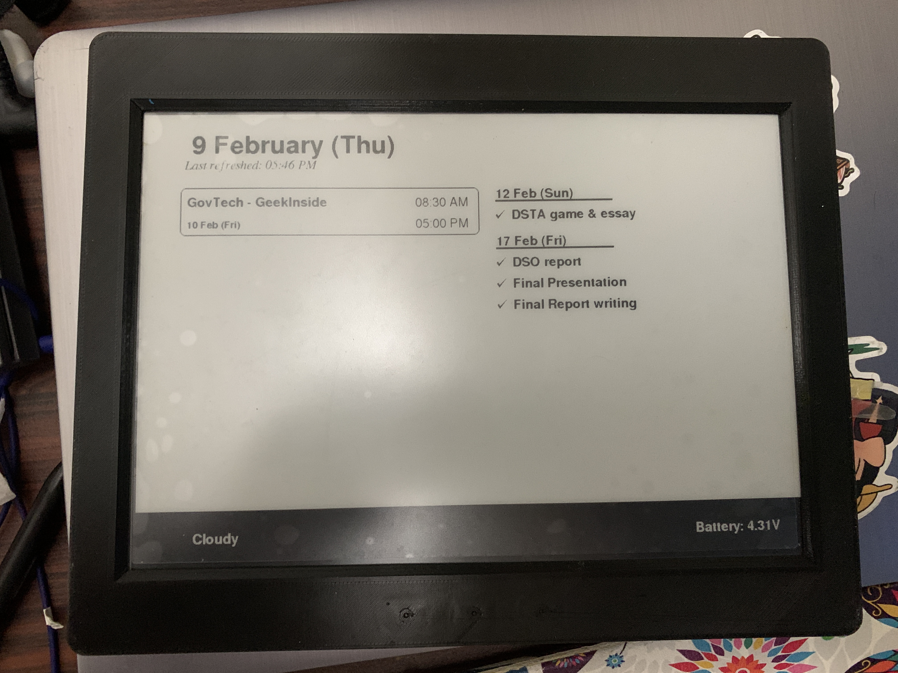
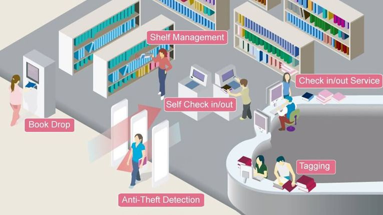
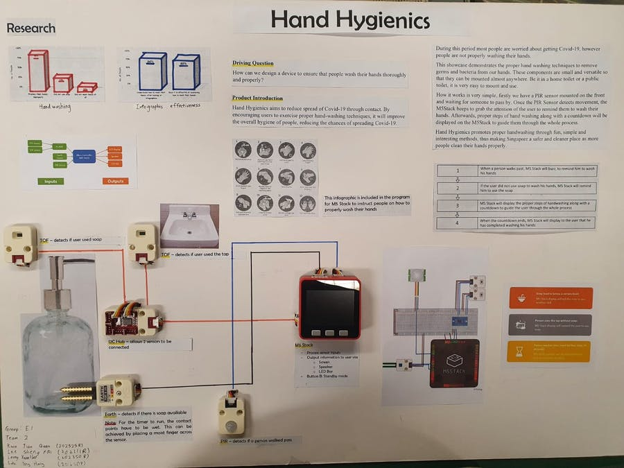
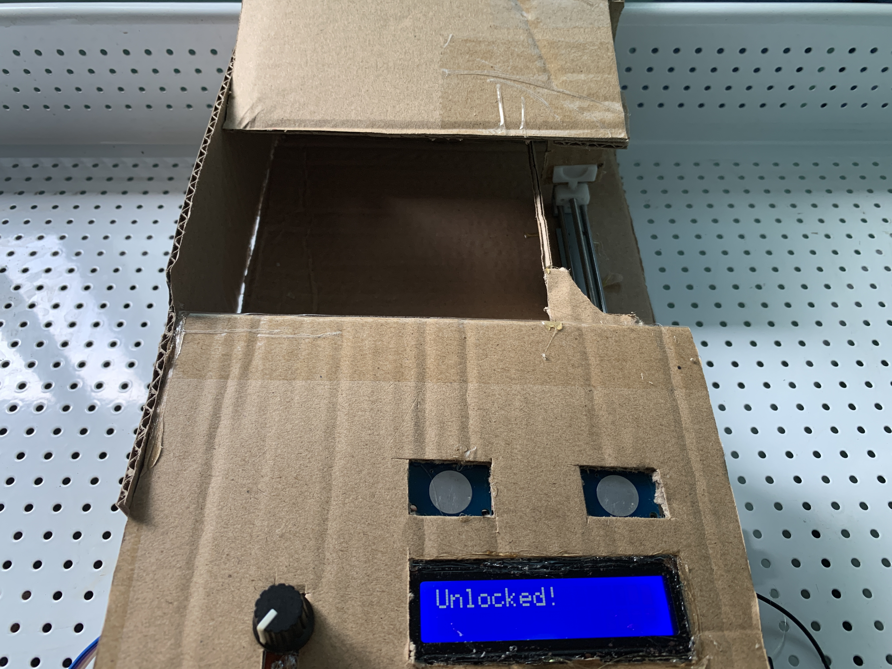
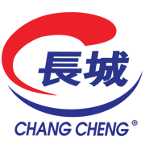
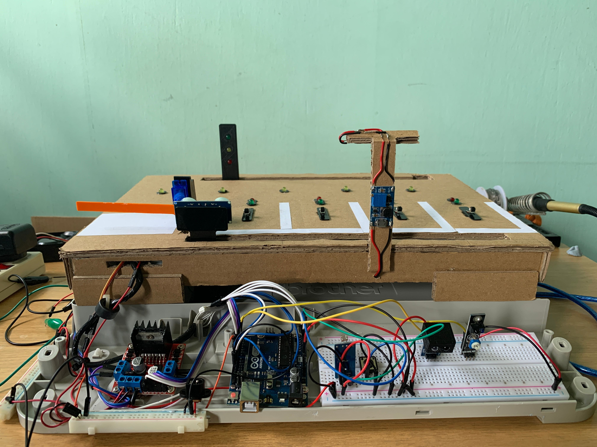
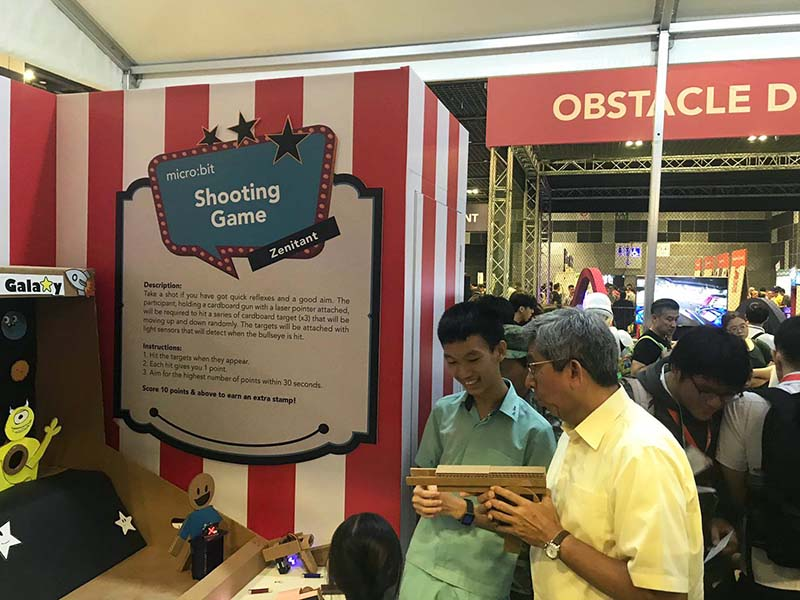

EInkBoard - dashboard

This is a multipurpose E-Ink display, that can display calendar events, todo tasks, weather and much more! The display was programmed by myself, down to the API requests and power optimisation. It allows for a runtime of several months without charging. Development is still in Progress!
HydroTrack - water intake tracker


HydroTrack is a device that helps people track their water intake and stay hydrated. It uses a multi-colored LED ring and connectivity with a mobile phone to display useful information and allow users to review historical data. An app was created to interface with the data collected by HydroTrack and provide additional features and functionality. The device is designed to be energy efficient, with a long battery life and the use of sleep states and BLE technologies to reduce power consumption. By using HydroTrack, users can ensure that they are getting enough fluids throughout the day, motivate themselves to drink more water, and understand their own water consumption patterns.
Circuit design, soldering and microcontroller programming

The circuit board was designed using EAGLE, which require the calculation of resistor values, reading of datasheet and soldering. This project was coded using Atmel Studio.
Personal online portfolio

This website was created using HTML and Bootstrap programming languages to showcase my project works over the years. It was created to be responsive, and can be viewed on any device, laptop or mobile.
ViewEngineering Innovation Challenge (First runner up)

I represented my school in an Enginnering Innovation Challenge. The topic was "Ionising Radiation".
My groupmate
and I had done research and experiment to understand more on the topic of ionising radiation.
Furthermore, we are required to create a prototype and present to a panel of judges. We won the position
of first runner up.
Official website: EIC 2021
E-Ink school calendar

The E-Ink school calendar display is a personal project that I created, the motivation being: it is more convenient when compared to checking my timetable. This project requires me to create intricate program, such as retrieving data from my calendar in a secure manner. Furthermore, this display is battery-powered. In order to make the display last for multiple months on a single charge, the program has to be very energy efficient.
ViewLibraLink

This project was created as part of my school's project. We decided to make a library-based smart connected system. It includes multiple features, ranging from noise detection to vibration sensor. All of the sensors are connected to a website, to display data on demand. The demo website linked to the "view" button uses simulated data.
ViewHand Hygienics

This project won second place in the m5-Stack industry competition.
Hand Hygenics was chosen as the top project by the school.
IOT weather station

This device was created to display the air temperature, humidity and light intensity. For this device, a schematic was created from scratch and hand soldered onto a PCB perf board. Furthermore, a 3D designed enclosure was created and printed, which houses all the items needed. This includes: battery, PCB board, microcontroller, display and multiple sensors.
ViewFocus assist

This was a quick prototype to test my skills. It's purpose was to lock distractions away from user, albeit a phone, phone or earpieces. This allowed me to practice programming on a then newly released microcontroller - Raspberry Pi Pico.
View VideoFood stall website

This website was created from scratch. The stall assigned was economical rice. For this website, I have to add all of the menu items, prices and reviews. Furthermore, I also created an online ordering system and location of the stall.
ViewSmart carpark

This project demonstrated my creative, electronics, reporting and programming skills. The Smart Carpark
includes hundreds of components, which have to be carefully planned and executed.
Smart Carpark was chosen as the top project by the school.
Micro:Bit Project

My team and I created a microbit based program that links with a concentration tracker, and a mobile phone app. The microbit will then display prompts on the built-in LED matrix and sound out alerts when the user was detected to not be concentrating. This project was showcased to the CEO of micro:bit foundation, Gareth Stockdale.
RoboCup Competition 2019

My team and I participated in the Robocup competition, where we had to write programs and compete for the best score. We were faced against competitors from other local schools, and even from other countries.
Tech Saturday event

My team and I initially created a shooting game as part of our Applied Learning Program (ALP). Several revisions of this game was made and the final poduct was displayed at Tech Saturday event by IMDA. THe booth was visited by many students, teachers, and even GOH such as Dr Yaacob Ibrahim and local celebrity, Mr Romeo Tan.
ViewRoboCup Competition 2018
My team and I participated in the Robocup competition, where we had to write programs and compete for the best score. We were faced against competitors from other local schools, and even from other countries.